Candidate List 20260508 Previous Day Next Day Section 1: New Sources (age<1d) Cosmological Afterglow
Section 2: Old (1-5d) sources observed last night placeholder
Section 1: New Afterglow/FBOT Cands Last Night (0)
Section 2: Older Sources Observed Last Night (9)
0. ZTF26aaurvzt (Afterglow?FBOT?) [Back to Top] [Share] [Trigger Swift] [Fritz ] [Lasair ]RA, Dec: 196.89864, 15.22354 13h 7m35.67s, 15d13m24.73sGalactic (l, b): 321.25857, 77.51668 ext(g-r) = 0.026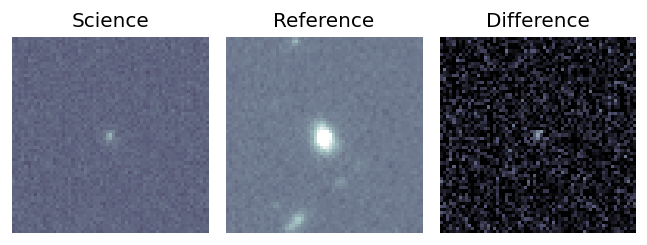
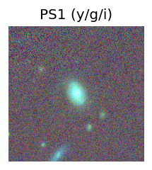
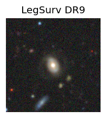
peak abs mag = -20.14 LegacySurvey: 1 sources in 3 arcsec Closest: d = 0.33 arcsec, 160.8 deg (east of north) photoz=0.09 (68% bounds 0.07, 0.12), type=SER peak abs mag = -19.69 (68% bounds -19.09, -20.26) 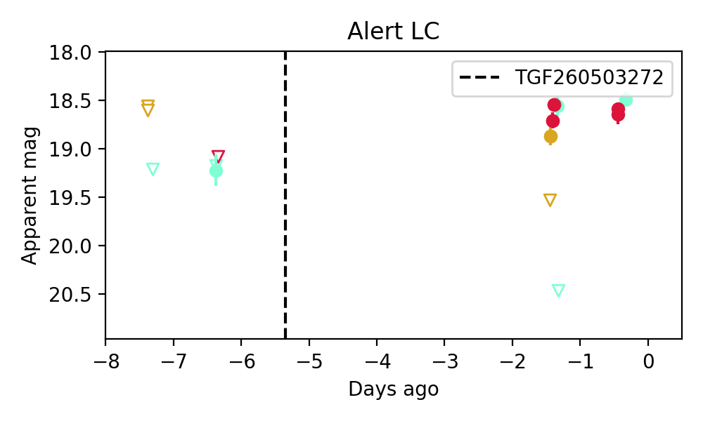
1. ZTF26aauunhp (FBOT?) [Back to Top] [Share] [Trigger Swift] [Fritz ] [Lasair ]RA, Dec: 188.92829, -4.08419 12h35m42.79s, -4d-5m-3.07sGalactic (l, b): 295.39913, 58.55738 WARNING: -0.22 deg from ecliptic plane ext(g-r) = 0.038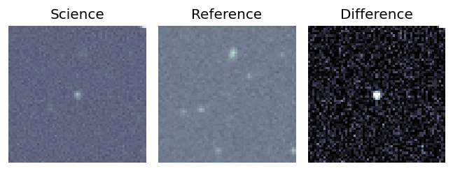
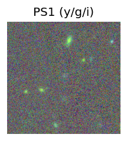
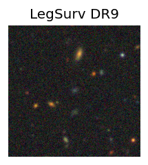
LegacySurvey: 1 sources in 3 arcsec Closest: d = 0.34 arcsec, 304.8 deg (east of north) photoz=0.46 (68% bounds 0.18, 0.96), type=EXP peak abs mag = -24.15 (68% bounds -21.79, -26.1) 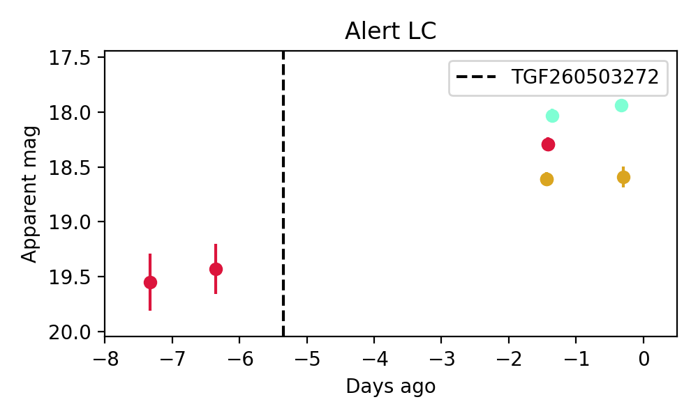
2. ZTF26aauwadk (FBOT?) [Back to Top] [Share] [Trigger Swift] [Fritz ] [Lasair ]RA, Dec: 171.52137, 54.514 11h26m5.13s, 54d30m50.41sGalactic (l, b): 146.76708, 58.48614 ext(g-r) = 0.017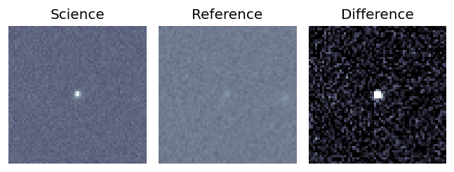
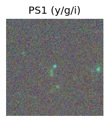
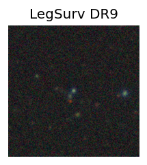
peak abs mag = -22.59 LegacySurvey: 1 sources in 3 arcsec Closest: d = 0.05 arcsec, 100.8 deg (east of north) photoz=0.14 (68% bounds 0.09, 0.39), type=REX peak abs mag = -20.83 (68% bounds -19.85, -23.31) 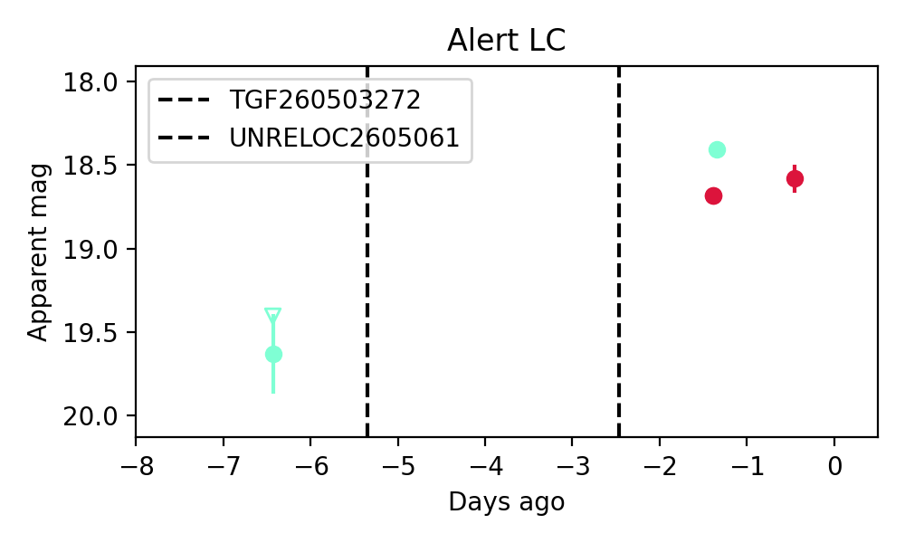
3. ZTF26aauwaia (Afterglow?) [Back to Top] [Share] [Trigger Swift] [Fritz ] [Lasair ]RA, Dec: 222.05346, 26.27136 14h48m12.83s, 26d16m16.89sGalactic (l, b): 37.7652, 63.96334 ext(g-r) = 0.035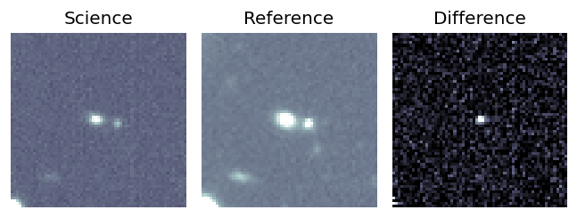
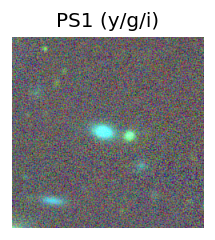
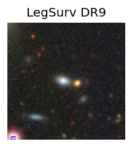
peak abs mag = -18.00 LegacySurvey: 1 sources in 3 arcsec Closest: d = 1.75 arcsec, 89.0 deg (east of north) photoz=0.06 (68% bounds 0.05, 0.08), type=SER peak abs mag = -17.41 (68% bounds -16.98, -17.83) 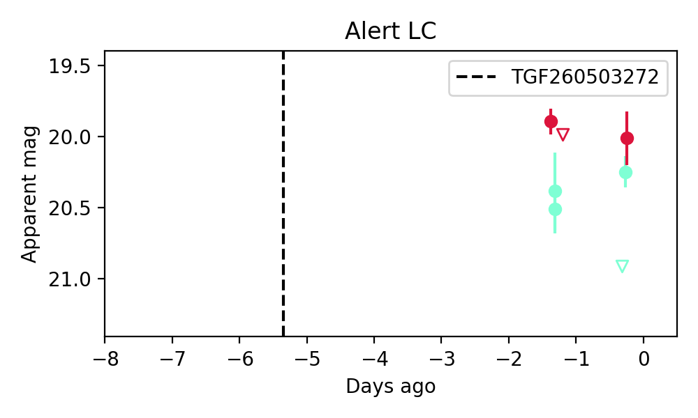
Consistent with synchrotron, g-r>0!
4. ZTF26aauxeux (FBOT?) [Back to Top] [Share] [Trigger Swift] [Fritz ] [Lasair ]RA, Dec: 238.77385, 1.89684 15h55m5.73s, 1d53m48.61sGalactic (l, b): 11.09974, 39.34196 ext(g-r) = 0.091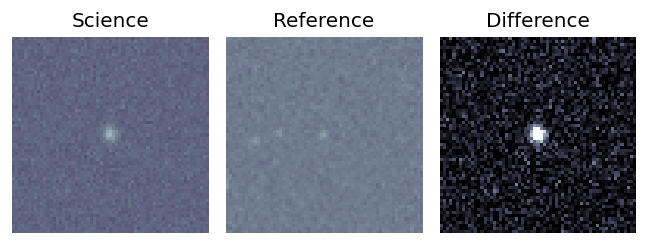
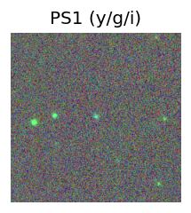
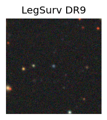
peak abs mag = -22.75 LegacySurvey: 1 sources in 3 arcsec Closest: d = 0.05 arcsec, 189.0 deg (east of north) photoz=0.11 (68% bounds 0.09, 0.16), type=REX peak abs mag = -20.43 (68% bounds -19.85, -21.15) 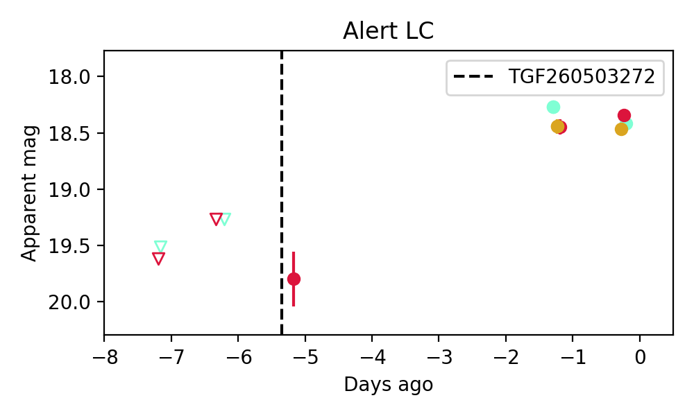
Consistent with synchrotron, g-r>0!
5. ZTF26aauxipq (Afterglow?) [Back to Top] [Share] [Trigger Swift] [Fritz ] [Lasair ]RA, Dec: 276.62916, 10.24113 18h26m31.00s, 10d14m28.07sGalactic (l, b): 39.32068, 10.14369 ext(g-r) = 0.235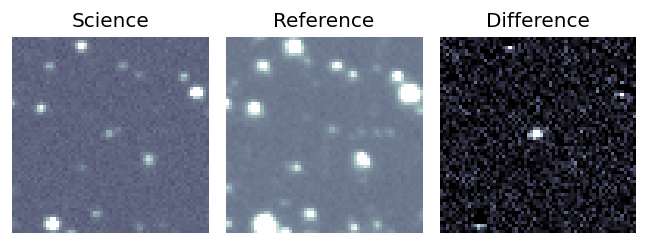
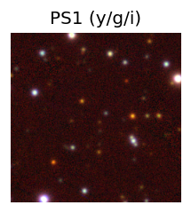
PS1: 1 source in 3 arcsec Closest: d = 2.18 arcsec photoz=1.07+/-1.75 peak abs mag = -26.34 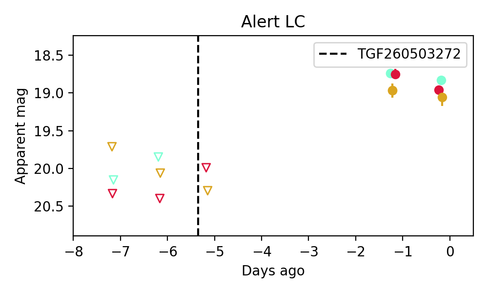
6. ZTF26aauxmcr (FBOT?) [Back to Top] [Share] [Trigger Swift] [Fritz ] [Lasair ]RA, Dec: 223.69421, -8.37354 14h54m46.61s, -8d-22m-24.74sGalactic (l, b): 347.38014, 43.60146 ext(g-r) = 0.1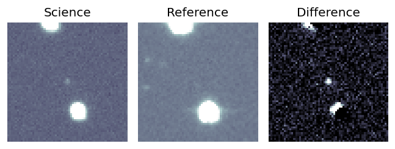
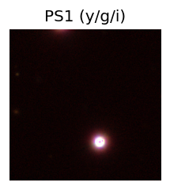
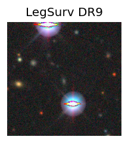
LegacySurvey: 1 sources in 3 arcsec Closest: d = 1.53 arcsec, 171.9 deg (east of north) photoz=0.13 (68% bounds 0.09, 0.2), type=DEV peak abs mag = -20.08 (68% bounds -19.34, -21.1) 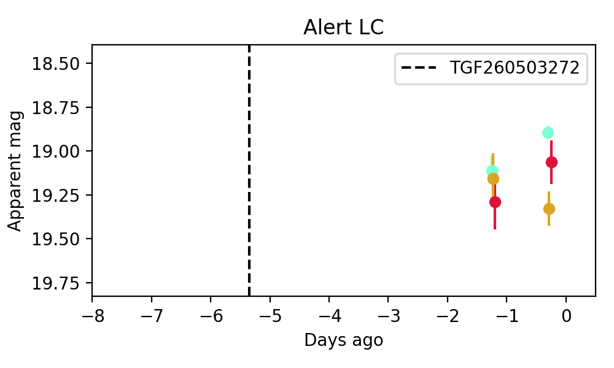
7. ZTF26aauybpk (FBOT?) [Back to Top] [Share] [Trigger Swift] [Fritz ] [Lasair ]RA, Dec: 238.79181, -17.46396 15h55m10.03s, -17d-27m-50.25sGalactic (l, b): 353.20309, 26.97605 WARNING: 2.82 deg from ecliptic plane ext(g-r) = 0.195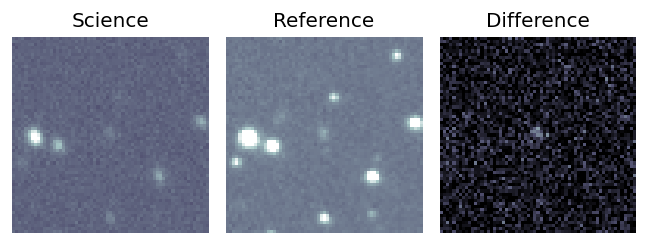
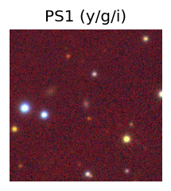
PS1: 1 source in 3 arcsec Closest: d = 0.14 arcsec photoz=0.26+/-0.04 peak abs mag = -21.93 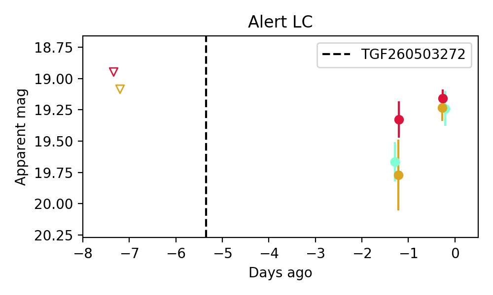
Consistent with synchrotron, g-r>0!
8. ZTF26aavbsku (FBOT?) [Back to Top] [Share] [Trigger Swift] [Fritz ] [Lasair ]RA, Dec: 207.18185, 26.45666 13h48m43.64s, 26d27m23.97sGalactic (l, b): 33.18205, 77.20449 ext(g-r) = 0.013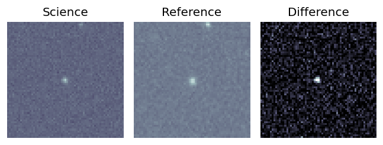
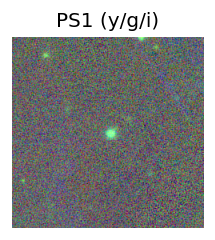
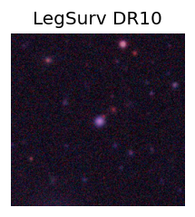
peak abs mag = -19.51 LegacySurvey: 1 sources in 3 arcsec Closest: d = 1.03 arcsec, 221.3 deg (east of north) photoz=0.18 (68% bounds 0.14, 0.23), type=REX peak abs mag = -19.39 (68% bounds -18.8, -19.97) 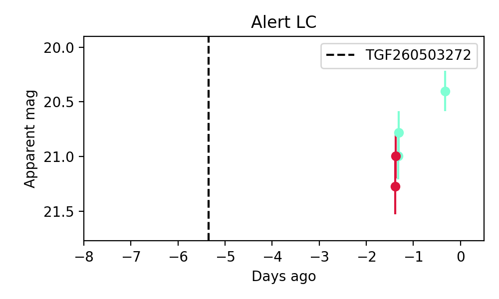